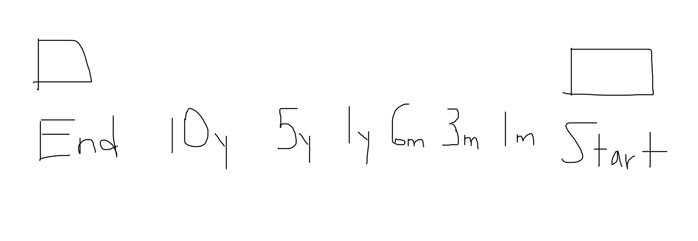

So recently, I've been talking to a ton of adults to understand their life aspirations. The results blew my mind.
Most of them didn't have a clear sense of what they wanted from life.
I was like what!?
I thought about why that was, and here's what I concluded: people will run the "race" of life like a chicken with their head cut off.
Based on my conversations, I've depicted how most will "run:"

Excuse my messiness, but it just doesn't make sense to me.
I had one guy tell me, word for word, "I had a midlife crisis when I was 44 because I just didn't know what I wanted and started to feel existential angst." The saying "if you don't know what you want, any path will take you there" is real.
But what if you just flipped how you thought about what you wanted in life? If you could think about what you wanted and work backwards? It would look something like this:

Hypothetically, by the time I die, I want to have:
- Travelled to 30 countries
- Start a company with a meaningful impact
- Grew a beard (mine comes in shitty, so this is a real goal haha)
I now know what the end looks like so I can work backward:

I start to have items I can do and are realistic to accomplish at each mark based on my end goals.
If I want to travel to 30 countries before I die:
- In 5 years, I will want to have gone to 5 countries.
- In 1 years, I'll have been to 1 country.
- In 6 months, I will brought a ticket for my first trip.
- In 3 months, I will be saving for my first trip.
- Finally, by the end of today (or at "start"), I will have chosen where I want to go.
The year and month benchmarks are arbitrary; you'll have to find a system that works best for you. But the idea remains the same, If you want something:
- Be able to identify what is (make the goal as measurable as possible)
- Want it badly (be relentless in achieving your goal)
- Make sure it is realistic; it would be unrealistic for me to say I want to travel to 30 countries in 1 month
Unfortunately, this system isn't as easy to implement as it sounds. Here are some things to keep in mind:
- You may not always know what you want. This week I graduated high school and was talking to people about what their plans were. Most people responded with going to university and not knowing anything beyond that. As an 18-year-old, I recognize it can be hard to understand, but what I thought was also interesting was how comfortable a lot of my friends' lives were. They didn't want to try new things or explore what they didn't know. The way I've started to develop an understanding of who I want to be has been seeking new, unique experiences. So try new stuff.
- I understand that life will be complicated and throw curveballs at you. Say in my plan to travel to a country in a year, eight months down the line, I have an emergency and can't go on the trip anymore. That doesn't mean you failed life or the system doesn't work, you adjust your goals. That's it.
- Creating a goal today doesn't mean it will still be one in 5 years. People and their subsequent goals are allowed to change and grow, so the ability to adapt will be crucial. I like to reevaluate my goals at a consistent interval to see how I'm feeling.
- Planning ≠mitigating risk. I'd advocate doing more of the opposite. Take risks, create serendipity, and be spontaneous within your goals. What I hope to do with my goal-setting is to give myself long-term clarity. On an average day, when I wake up, I know what gets me up.
That's it. Now create expectations for yourself.